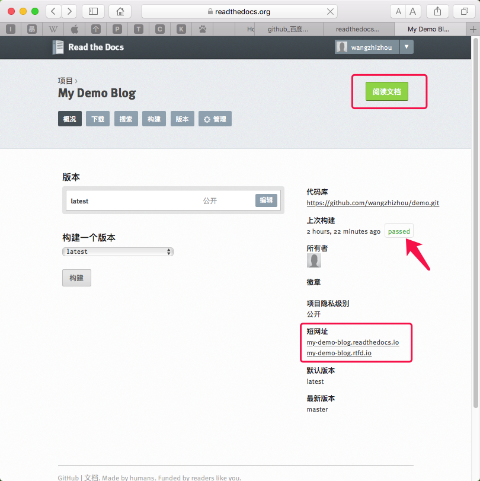

前提准备
-
熟悉
Markdown文档书写, 这里有份语法说明 -
熟悉
Git的版本控制的基本用法，这里有个简明手册 -
在
GitHub上创建一个帐号, 一个很好的Git和GitHub学习资源 -
至少看过一次
MkDocs的使用文档 -
在
Read the Docs上开通一个帐号
环境搭建
本机安装有python环境和pip包管理器。然后执行下面命令：
pip install mkdocs
写作过程
创建默认文档
mkdocs new demo && cd demo
输出：
INFO - Creating project directory: demo
INFO - Writing config file: demo/mkdocs.yml
INFO - Writing initial docs: demo/docs/index.md
默认的文档结构:
demo
├── docs //这个目录下存放markdown编写的文档
│ └── index.md
└── mkdocs.yml //项目的配置文件，包括文档目录和主题风格配置
本地文档浏览使用下面命令：
mkdocs serve
输出:
INFO - Building documentation...
INFO - Cleaning site directory
[I 170524 09:23:48 server:283] Serving on http://127.0.0.1:8000
用浏览器打开http://127.0.0.1:8000, 就可以查看文档了。如果在调试服务器开启的情况下修改项目文件，修改会被自动检测到，并重新生成项目，实时预览修改后的效果。
这样就可以在docs文件夹下面创建文档文件，并修改mkdocs.yml配置文件，使新增加的文件在文档目录结构中出现。
本博客目前的结构和配置文件情况
配置文件mkdocs.yml
site_name: Joker's Blog //配置项目名称，也就是文档显示名称
pages: //配置页面的显示层级结构
- 'Profile': 'index.md' //['显示名称':'页面文件路径']
- 'Me': //多级目录结构：me下面包含多个页面
- 'me/English Personal Resume.md' //如果省略配置显示名称则按文件名称显示
- 'me/My Plan for finding Job.md'
- 'me/Personal Pre-Work Record.md'
- 'me/My Financial Planning.md'
- 'me/How I create this blog.md'
- 'Tech':
- 'tech/Network Simulator 2 Installation Guide for Ubuntu.md'
- 'tech/Learn STL In 30 Minutes.md'
- 'tech/Installation of Ubuntu 16.04 On UDisk.md'
- 'tech/Configure Git Server With Ubuntn and Apache 2.md'
- 'tech/Add Watermark on Video with OpenCV and FFmpeg.md'
- 'tech/Develop DLNA Using Platinum Library.md'
- 'tech/FFmpeg and SDL tutorial 1.md'
- 'tech/FFmpeg compiled on MacOS.md'
- 'tech/FFmpeg version 3.1.4 example code.md'
- 'tech/Fmpeg 2.8.6 example code - transcoding.md'
- 'tech/Nmap Basics.md'
- 'tech/Use GDB.md'
- 'tech/User OpenCV to add watermark on a video.md'
- 'tech/Wireshark Basics.md'
- 'life':
- 'Ali Fu': 'life/alipay-scan-fu-icon.md'
theme: readthedocs //配置文档使用的模板样式
目录结构
.
├── LICENSE //遵守的许可证文件
├── README.md //项目说明
├── docs //文档页面源文件目录
│ ├── assets //包括一些多媒体资源
│ │ ├── Resume
│ │ ├── excels
│ │ ├── ffmpeg-code
│ │ ├── pdfs
│ │ └── pictures
│ ├── index.md
│ ├── life
│ │ └── alipay-scan-fu-icon.md
│ ├── me
│ │ ├── English\ Personal\ Resume.md
│ │ ├── How\ I\ create\ this\ blog.md
│ │ ├── My\ Financial\ Planning.md
│ │ ├── My\ Plan\ for\ finding\ Job.md
│ │ └── Personal\ Pre-Work\ Record.md
│ └── tech
│ ├── Add\ Watermark\ on\ Video\ with\ OpenCV\ and\ FFmpeg.md
│ ├── Configure\ Git\ Server\ With\ Ubuntn\ and\ Apache\ 2.md
│ ├── Develop\ DLNA\ Using\ Platinum\ Library.md
│ ├── FFmpeg\ and\ SDL\ tutorial\ 1.md
│ ├── FFmpeg\ compiled\ on\ MacOS.md
│ ├── FFmpeg\ version\ 3.1.4\ example\ code.md
│ ├── Fmpeg\ 2.8.6\ example\ code\ -\ transcoding.md
│ ├── Installation\ of\ Ubuntu\ 16.04\ On\ UDisk.md
│ ├── Learn\ STL\ In\ 30\ Minutes.md
│ ├── Network\ Simulator\ 2\ Installation\ Guide\ for\ Ubuntu.md
│ ├── Nmap\ Basics.md
│ ├── Use\ GDB.md
│ ├── User\ OpenCV\ to\ add\ watermark\ on\ a\ video.md
│ └── Wireshark\ Basics.md
└── mkdocs.yml //文档的配置文件
调试方法
如果觉得一边用vim写文档，一边还得在写完后手动运行一次mkdocs serve来开启调试服务器查看效果有些麻烦，这里有方法可以简化这些操作:
1. 使用shell后台命令运行
mkdocs serve &
这样运行，shell不会阻塞，还可以继续进行编辑活动。需要回到前台运行时，使用fg命令，Ctrl+C就可以结束调试服务器了。
2. 使用
screen工具
如果维护过服务器，那么ssh下一定用过screen这个工具，系统默认是不会安装的，需要手动安装:sudo apt-get install -y screen
使用screen启动调试服务器：
screen mkdocs serve
之后按下Ctrl+A+D就可以使调试服务器不阻塞shell，这样就可以继续编辑文档了。浏览器在每次保存文档后会自动触发一次页面刷新来更新显示内容。
如果要结束调试服务器，使用命令:screen -r，并使用Ctrl+C来结束。
手机页面调试
如果觉得在一个显示器屏幕内来回切换浏览器和编辑器有点麻烦，也可以用手机做为效果预览器，但这需要做一些额外的配置。
如果手机和电脑在同一个局域网内部，可以把电脑作为手机的http代理服务器来访问http服务，并在电脑的hosts文件中配置如下的域名解析：
127.0.0.1 doc.com
在文档调试服务器运行的情况下，手机上访问http://doc.com:8000就可以实时预览文档效果，而且每次文档保存后会自动触发手机浏览器页面刷新。
那么剩下的就是如何配置手机通过电脑来访问Http服务了
在当前的WiFi连接中配置一下http代理，电脑上需要有代理软件安装，例如Charles或者Fiddler
例如,Mac下使用Charles代理软件，手机可设置如下：

然后手机输入http://doc.com:8000浏览到文档效果如下：

在线托管
本地编辑的差不多了，可以发布到网络上，这就涉及到托管服务。源代码可以通过GitHub仓库服务托管，文档自动生成和浏览可以通过Read The Docs服务来托管，并且当配置了GitHub对Read The Docs的Web Hook后，GitHub仓库的每次提交都会自动触发Read The Docs上的文档重新生成,以便保持最新状态，很方便。
前面已经注册了这两个托管服务的帐号。下面动手来发布文档到网络上，让更多的人可以看到。
-
登录
GitHub并创建一个托管仓库
-
给仓库添加
Read The Docs的WebHook
-
登录
Read The Docs并导入文档项目仓库
-
使用
git命令初始化文档项目为git仓库, 创建首次提交并上传到GitHub的仓库中，触发Read The Docs自动构建服务
//初始化git仓库并创建首次提交记录
git init && git add * && git commit -m 'a demo blog'
//这里的https://github.com/wangzhizhou/demo.git路径应该是你自己创建的仓库路径
git remote add origin https://github.com/wangzhizhou/demo.git
//推送到GitHub仓库中
git push -u origin master
- 在线浏览文档
